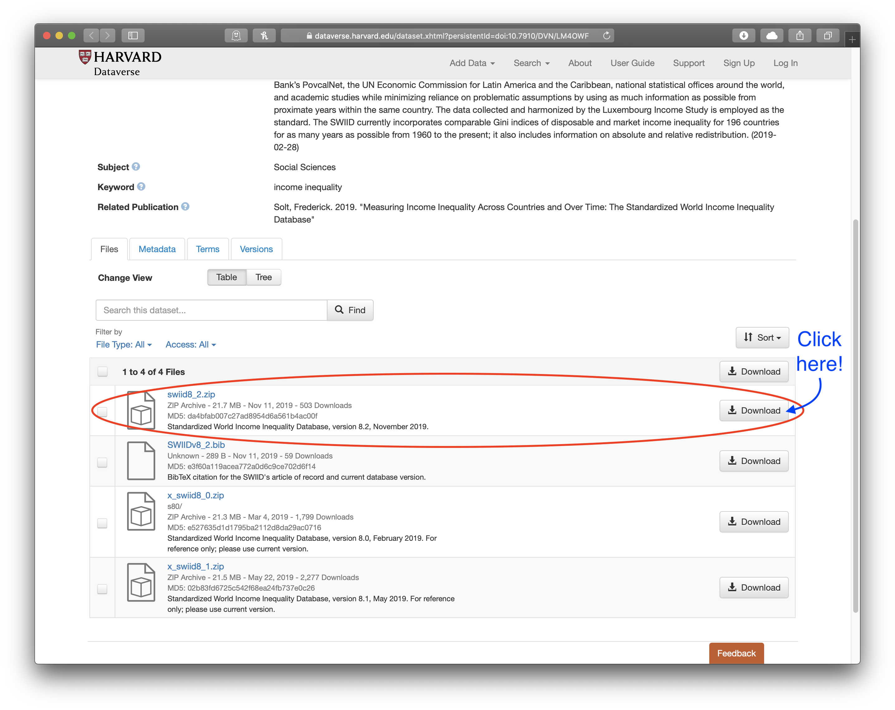

Frederick Solt
SWIID
DCPO
Research
Teaching
Software
Blog
CV
SWIID Frequently Asked Questions
Income Inequality & Its Consequences, Comparative Political Behavior, and Dynamic Comparative Public Opinion
SWIID Frequently Asked Questions
Click on the topic headings to learn more
How to . . .

Wait, how can I download the data again?
First, click on this link. Scroll down past the description until you see a list of files. The dataset is a .zip file, the first one labeled “2. Data” (see the…
How can I use the SWIID data to make my own graphs?
The SWIID download contai…
I’m using an older version of Stata, and it won’t open the file. How can I use the SWIID?
Stata 13 introduced a new file format which older versions of Stata can’t open. Fortunately, there’s an easy fix: the
use13
command. In…
How can I merge my other data into the SWIID using country codes?
First, add whatever country codes are needed to the SWIID data: there are routines for both Stata (kountry; type
findit kountry
in Stata’s command…
How can I use the SWIID data with Stata’s time-series operators?
To use Stata’s time-series operators (
l.
,
f.
,
d.
, etc.), you must first declare the time and panel variables using
tsset
, but the SWIID is already
mi…
I imported the swiid_summary.csv file, and the data for some countries seem to be given in different units; for example, in one country, gini_disp is 313 and gini_mkt is 33. How can I interpret these data?
The issue here is that the swiid_summary.csv file is saved using RFC 4180 csv conventions, that is, with a dot marking the decimal and a comma separating values. If you are in a locale that observes different conventions—many countries…
No matching items
The SWIID Data
The estimates for Ruritania, among others, have changed since the previous version. Why is that?
There are three reasons why estimates change from one version of the SWIID to the next. The first reason is revisions to the Luxembourg Income Study. As the LIS serves as the standard for SWIID estimates, when Ginis from the LIS change, the SWIID estimates change as…
How is Germany treated in the SWIID? Where’s East Germany?
As in the LIS, Germany is West Germany only before 1991 and (united) Germany from that point forward. The SWIID…
What about Russia and the rest of the former Soviet Union? Yugoslavia? Czechoslovakia? Pakistan? Sudan? Ethiopia? Why are there estimates for successor states before they actually existed?
For countries that have undergone partition, the SWIID estimates for a given year include all of the origin country’s then-current territories. This…
Why doesn’t the SWIID include estimates for redistribution for all countries and years?
Although the SWIID includes estimates of disposable income inequality and market…
No matching items